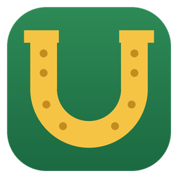

Mount Sheet Sync
A World of Warcraft addon and a small Windows tray program that keep your Google Sheet of mount farming up to date: which bosses each character killed this week, which mounts you already own, and what is still left.
How it works
- The addon (World of Warcraft Retail) notes boss kills, your characters and your mount collection in its saved-variables file, and shows the “Remaining” list for the current character in the game.
- The program (Windows 10/11) reads that file, creates a spreadsheet in your own Google Drive and marks kills and collected mounts there. It also brings the “Remaining” list back to the game.
Why it signs in with Google
The program signs in with your Google account only to create and update the mount spreadsheet in your Google Drive. It asks for:
drive.file— access only to the files the program creates itself (the mount spreadsheet). It cannot see or change any other file on your Google Drive.openidandemail— to show in the settings which account is signed in.
The program runs on your computer and talks to Google directly. There is no server of ours in between, no analytics and no advertising. Details: privacy policy.
Get started
- Install the addon Mount Sheet Sync (CurseForge, or the
MountSheetSyncfolder from the release archive intoWorld of Warcraft\_retail_\Interface\AddOns). - Download the release archive, extract it and run
2-program\MountSheetSync.exe. - In the settings: “Sign in with Google…” → “Create spreadsheet…” → tick your characters.
Questions and bug reports: GitHub Issues.
Mount Sheet Sync — по-русски
Аддон для World of Warcraft и небольшая программа в трее Windows, которые сами ведут вашу Google-таблицу фарма маунтов: каких боссов персонажи убили на этой неделе, какие маунты уже собраны и что осталось.
Зачем вход через Google
Программа входит в ваш аккаунт Google только для того, чтобы создать таблицу маунтов на вашем Google Диске и
вести её. Она просит доступ drive.file — только к файлам, которые создала сама, остальной Диск ей
недоступен, — и адрес почты (openid, email), чтобы показать в настройках, какой аккаунт
подключён. Программа работает на вашем компьютере и обращается к Google напрямую: наших серверов, аналитики и
рекламы нет. Подробнее — в политике конфиденциальности.